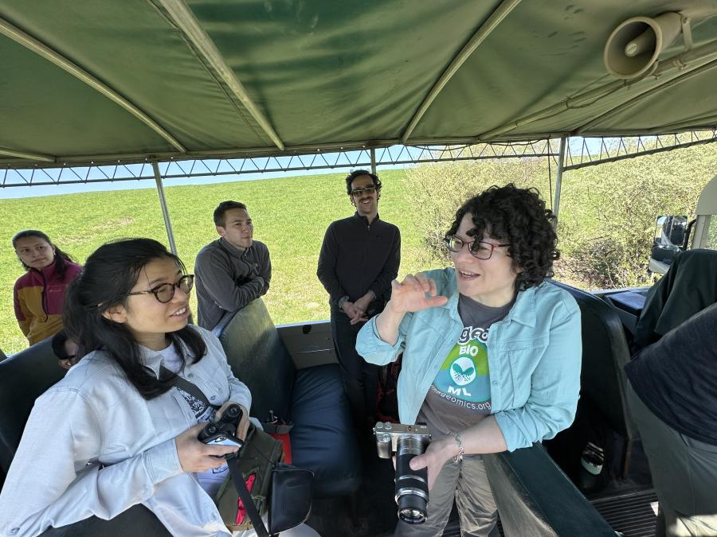
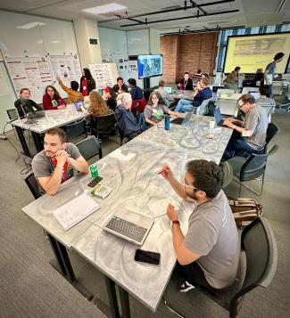

Once a year, the Imageomics Institute team is called from around the world to meet in person for a week of events at The Ohio State University in pursuit of advancing their burgeoning new field of science.
The 2024 annual All-Hands Meeting took place from April 15-18 at Pomerene Hall, culminating with a tour of The Wilds nature preserve. The weeklong event brought together a diverse group of researchers connected by their commitment to advancing the science and application of Imageomics. Each day featured a series of keynote speeches, collaborative sessions, and hands-on workshops, all designed to foster a deeper understanding and innovation within the community.
Imageomics Director and Ohio State Professor Tanya Berger-Wolf said the gathering was not just a conference but a vibrant forum for nurturing institute-wide values, integrating collaborators, and enhancing data governance across the burgeoning field of Imageomics—a field at the intersection of imaging, biology, and data analysis.
Monday: Next Gen Day, 2024
Berger-Wolf opened the event with a welcome address that set the tone for the days to follow.
"Extracting biological information from images and making information such as traits and phenotype computable directly from images, using machine learning, computer vision and AI, graduate students, postdocs, the next generation are the ones who are going to be driving this forward. The next ideas, next research, and what the field is going to be looking like next," she said. "We have to bring new people, new ideas, new connections are possible - and that’s what’s so exciting about the All-Hands, because that’s where it all happens. So that their ideas, their research, their conversations, and connections have their own space to grow."
Following the opening, NextGen researchers involved participated in a workshop aimed at enhancing research impact through effective pitching. The day concluded with a Speed Networking session, facilitating brisk and engaging exchanges among researchers, setting a collaborative tone for the week.

“I love talking research so it’s always a great time,” Jenna Kline said, a second year NextGen and third-year doctoral student at Ohio State. “We had a really great session last year, so I was very much looking forward to reconnecting other grad students working on similar projects and learn a little bit about what they’re working on and also getting some feedback on some of my research projects as well.”
Tuesday: Imageomics Deep Dive
Throughout the event, attendees participated in a variety of sessions that covered everything from data management to future visions of the field. Notably, the "Imageomics Futures Workshop" facilitated by Berger-Wolf and her colleagues involved discussions on personal and collective visions, helping to define actionable paths forward.
Another significant session, "Mastering Data Management," held by Elizabeth Campolongo addressed the critical need for robust data policies and practices—an essential aspect of research that affects reproducibility and reliability in science.
Tuesday focused on mastering data management, with Campolongo and a team of experts leading the morning sessions. The workshops provided critical insights into effective data governance—a cornerstone for advancing Imageomics research integrity and reproducibility.
The afternoon saw the “Imageomics Futures Workshop,” where Berger-Wolf encouraged participants to envision the future of their field, discussing new projects and innovations that could drive forward their collective scientific agenda.
Wednesday: Collaborators Day, Building a Cohesive Community
The event also featured innovative networking approaches, including a "Speed Networking" session, which allowed researchers to share their projects in rapid succession, which focused on discussing challenges researchers face in their work.
The day was marked by Lightning Talks and an active poster session. These interactions were vital for building a supportive community, as they helped forge new collaborations and strengthen existing ones.
The closing remarks by Berger-Wolf highlighted the significance of these annual gatherings.
“Bringing researchers together from around the world once a year to reflect and strategize in person is not just beneficial; it is essential. It allows us to share insights, tackle challenges collaboratively, and keep our community tightly knit and focused on our common goals," she said.
The Imageomics Institute’s All-Hands Meeting not only highlighted the latest advancements in the field but also reinforced the importance of community and collaboration in science.
By coming together, sharing knowledge, and challenging one another, the participants left equipped to further their research with renewed vigor and clearer direction, promising a bright future for the field of Imageomics.
This event showcased how gatherings of this nature are pivotal for scientific advancement, particularly in fields as dynamic and impactful as Imageomics. It provided a platform for researchers to share, learn, and plan, ensuring that the community remains at the cutting edge of technological and methodological developments.
Thursday: Field Excursion to The Wilds
One of the highlights of the meeting was a field trip to The Wilds in Cumberland, Ohio, where researchers not only enjoyed a hands-on data collection experience in the safari area but also engaged with ongoing conservation projects. The excursion underscored the real-world impact of Imageomics research on biodiversity and conservation efforts.
The final day of the meeting was dedicated to reflecting on the insights gained throughout the week and planning future initiatives. Sessions included collaborative sprints where attendees worked together to explore novel product combinations and application ideas.
The meeting closed with a summary of the week’s achievements and a final reflection led by Berger-Wolf, emphasizing the importance of community and collective action in Imageomics research.
A highlight of the week was Wednesday’s field trip to The Wilds in Cumberland, where participants engaged directly with conservation projects and applied Imageomics tools in a real-world setting.
The outing not only provided practical experience but also underscored the real-world impact of Imageomics research on global biodiversity efforts.
Conclusion: Fostering a Forward-Thinking Community
The week’s events at the Imageomics Institute’s All-Hands Meeting highlighted the importance of face-to-face interactions in fostering a collaborative and innovative research environment. Attendees left with strengthened connections, new ideas, and a renewed commitment to pushing the boundaries of Imageomics, making this annual gathering a cornerstone for future advancements in the field.
"It is really important to bring everyone together, making sure that Imageomics is a field, and our research does not end in three years with the ending of the grant funding," Berger-Wolf said. "We’re also social people. We’re social creatures. We need that interaction to get the energy going, to get the ideas flowing, and to get the sparks initiated so that they can blossom into a full flame of research."
Story and video by Ryan Horns, Communications and Engagement Manager